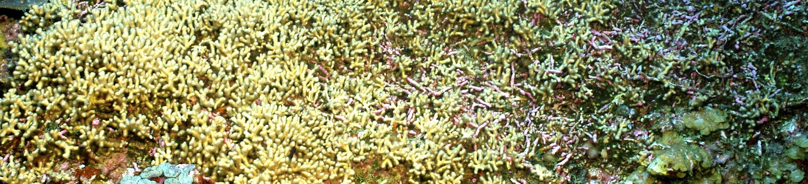

How do elevated carbon dioxide and temperature influence the development of the giant kelp Macrocystis pyrifera?
In addition to being key players in the coastal carbon system, kelps provide habitat for several commercially and ecologically important species. As a Master's student in Matt Edwards' Lab at San Diego State University, I explored how the growth and survival of the giant kelp Macrocystis pyrifera at vulnerable, early life stages were impacted by ocean acidification and warming.
Publication
Shukla, P. Edwards, M.S. 2017. Elevated pCO2 is less detrimental than increased temperature to early development of the giant kelp, Macrocystis pyrifera (Phaeophyceae, Laminariales). Phycologia.doi.org/10.2216/16-120.1.

How do elevated CO2 leves affect habtita-forming corlline alge (‘Rhodoliths’) and associated microbes?
I collaborated with Dr. Giselle Cavalcanti to study rhodolith communities off of Catalina Island. Rhodoliths are free-living calcareous red algae that create complex habitat for a wide array of species. We sought to understand how ocean acidification affects microbial communities on the rhodolith holobiont and the ambient seawater.
Publication
Cavalcanti, G.S., Shukla, P., Morris, M., Ribeiro, B., Foley, M., Doane, M. P., Thompson, C. C., Edwards, M.S., Dinsdale, E. A., Thompson, F. L. 2018. Rhodoliths holobionts in a changing ocean: host-microbes interactions mediate coralline algae resilience under ocean acidification. BMC Genomics.doi.org/10.1186/s12864-018-5064-4.